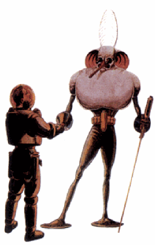
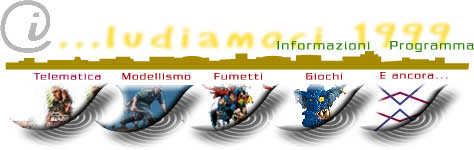
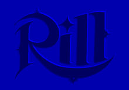

|  |  | ||||
I...ludiamoci è una manifestazione ideata dall'Arci di Pescara ed organizzata in collaborazione con le associazioni Metro Olografix, Laboratorio Scrittura Disegno, ALCEI, Alfa Model, Chaos League, FreeLand, Araba Fenix ed è dedicata a tutti coloro che cullano il fanciullo che è in loro. |
|||||
 |
 |
 | |||